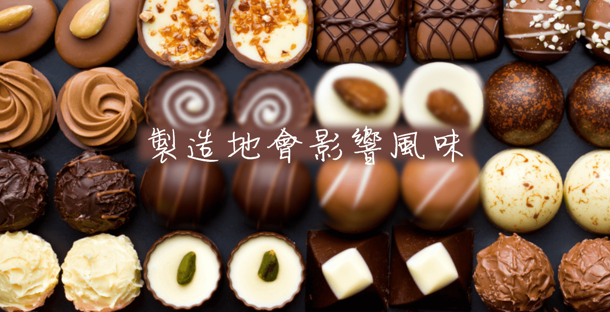
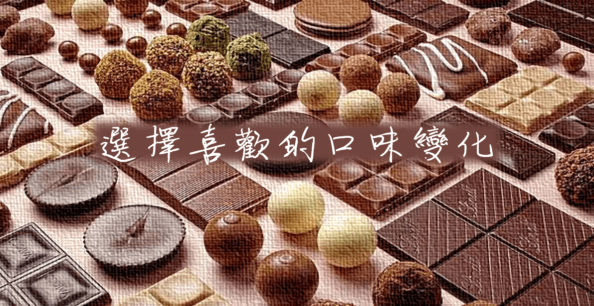

如何挑選巧克力-
選巧克力前你不可不知的事情
-

比利時、法國、義大利、瑞士及德國都可說是知名的巧克力生產大國，而每個地方所製造的巧克力風味也有所不同， 選購時別忘了將「產地」列為挑選的基準之一。例如比利時十分講究可可的品質，其製造的巧克力可說是風靡全球， 而法國較流行一口尺寸（Bonbon de chocolat），以及外型高雅華麗的款式；至於義大利的巧克力大多會添加榛果來增添風味， 瑞士的商品則具有濃郁的牛奶風味，各位不妨根據個人喜好來選擇製造的國家。
-

除了基本的黑、白巧克力之外，牛奶巧克力、伯爵茶巧克力等風味都各具特色，而加入杏仁、榛果等堅果類的巧克力更是深受大眾喜愛。 此外，近年來添加大量果乾且帶有粉紅色澤的紅寶石巧克力，亦具有相當高的人氣，各位也可配合自己喜歡的口味與配料來做選擇。
-
可可含量的多寡會影響巧克力的苦味程度，因此選購時可以透過包裝上的標示來進行確認。一般來說可可含量越高， 其苦味便會愈加明顯，喜歡此風味的人不妨可從高含量的商品開始試起。 另外，以日本的巧克力商品來說，可可含量超過30～40%者會標示為「巧克力」，未滿30%的商品則會歸類於「準巧克力」； 而根據台灣食品藥物管理署的巧克力標示管理法，黑巧克力中的可可含量須超過35%、牛奶巧克力則須超過25%。
-
香甜濃郁的巧克力，除了深受小朋友喜愛之外，也是許多懷孕女性用來轉換心情的療癒零嘴。 不過市面上有些巧克力會混和洋酒來製作，甚至也有在內餡加入酒精糖漿的商品，乍看之下就像是一般普通的巧克力，因此選購時請務必仔細確認以避免誤食。